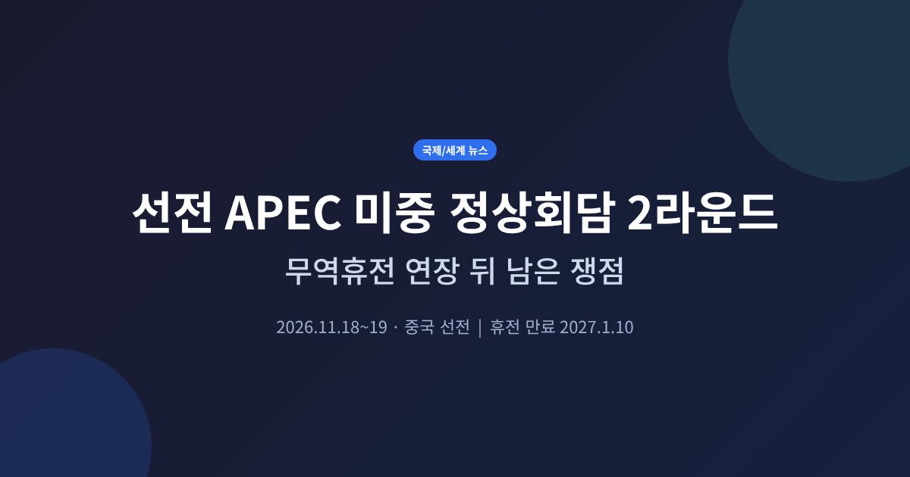
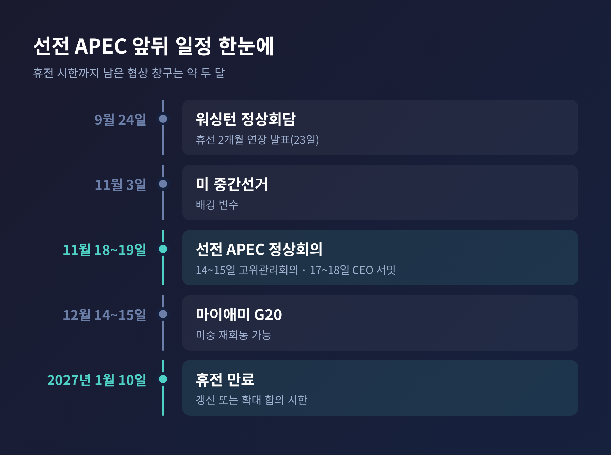
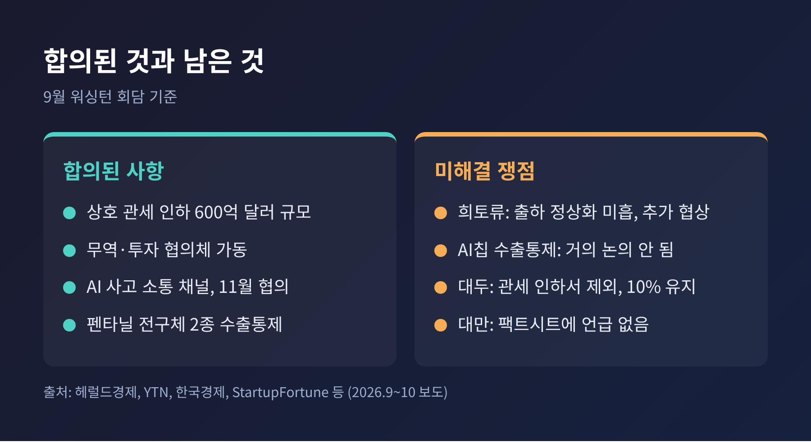
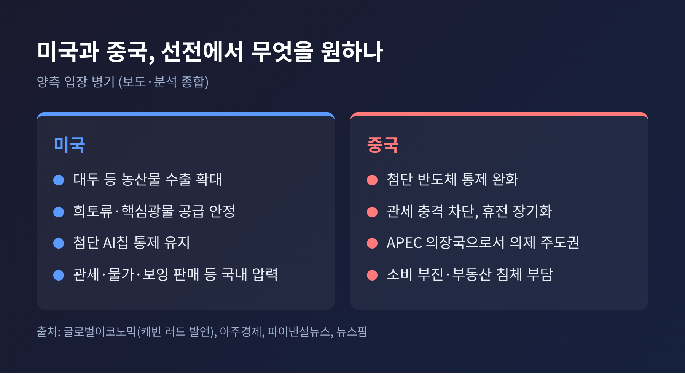
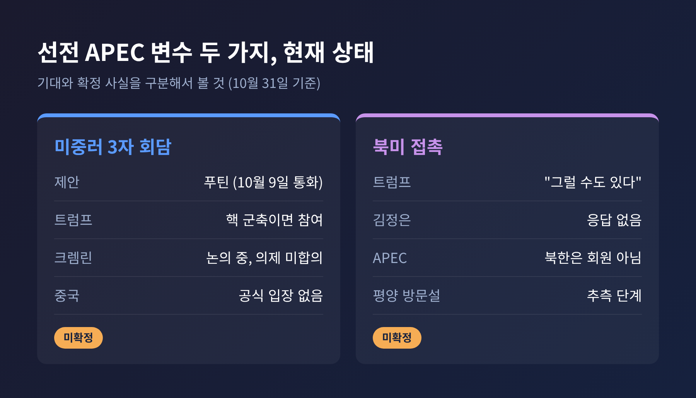
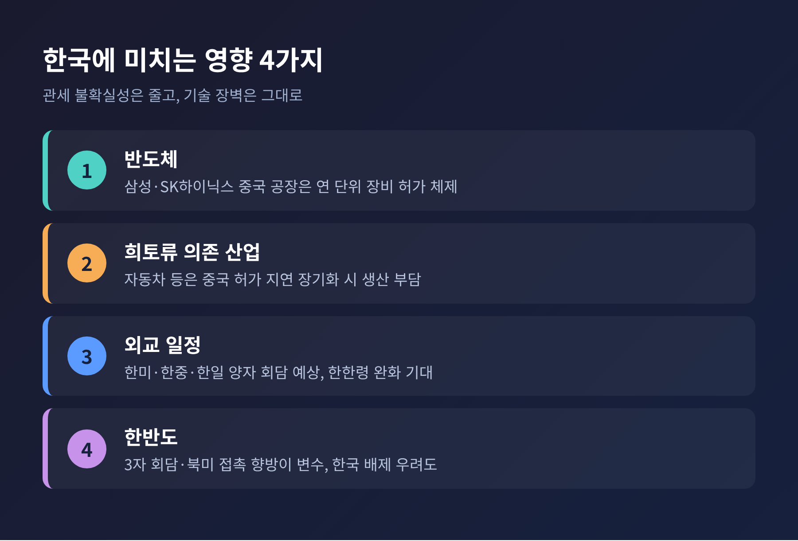

선전 APEC 미중 정상회담 2라운드, 무역휴전 연장 뒤 남은 쟁점

이번 글에서는 11월 중국 선전 APEC 정상회의를 앞두고 미중 무역휴전과 정상회담 '2라운드'가 어떤 상태인지 정리해 보겠습니다.
휴전은 지난 9월 워싱턴 회담을 거치며 2027년 1월 10일까지 두 달 연장되었고, 희토류·반도체·대두는 여전히 결론이 나지 않았습니다.
미중러 3자 회담과 북미 접촉 가능성까지 겹쳐, 11월 18~19일 선전은 한국에도 가볍지 않은 무대입니다.
■ 무슨 일이 있었나: 휴전은 늘었지만 기간은 짧았습니다
스콧 베선트 미 재무장관은 9월 23일(현지) 무역휴전 만료일을 11월 10일에서 2027년 1월 10일로 미루겠다고 밝혔습니다.
이튿날인 24일 트럼프 대통령과 시진핑 국가주석이 백악관에서 마주 앉았습니다.
양측은 "존중·공평·대등에 기반한 건설적 전략 안정 관계"를 만들기로 했고, 서로가 여는 정상회의에 참석할 뜻도 밝혔습니다(헤럴드경제 보도).
주목할 대목은 연장 기간입니다.
미국 당국자 사이에서는 3~6개월이 거론되었고, 중국은 훨씬 긴 연장을 원했다고 전해집니다.
결과는 두 달이었습니다.
넓은 합의를 담을 시간을 벌되, 압박 수단은 손에서 놓지 않겠다는 계산으로 읽힙니다.

■ 왜 중요한가: 관세는 낮아졌지만 기술 장벽은 그대로입니다
예전엔 관세 전쟁이었습니다. 2025년 4월에는 미국 145%, 중국 125%까지 치솟았습니다(아주경제 칼럼 기준).
지금은 관리의 단계입니다.
양국은 각각 300억 달러, 총 600억 달러(약 81조 5천억 원) 규모의 품목에 상호 관세를 낮추기로 했고, 대상 품목의 90% 이상은 추가 관세가 없어지고 최혜국 세율만 적용됩니다(YTN 보도).
다만 효과는 제한적입니다.
전문가들은 미국의 대중 평균 관세율이 약 22%에서 20.5%로 내려가는 데 그칠 것으로 봅니다.
트럼프 대통령 복귀 전의 약 11%와는 여전히 거리가 있습니다.
반도체·전기차·배터리 같은 전략 품목은 감축 목록에서 빠졌습니다.
그래서 이번 휴전은 '해결'이 아니라 '유예'에 가깝습니다.
유예 기간에 무엇을 채우느냐가 11월 선전 회담의 핵심입니다.
■ 협상 의제: 합의된 것과 남은 것

희토류. 중국은 2025년 10월의 포괄적 수출통제를 유예해 왔습니다. 다만 2025년 4월의 7개 원소 통제는 풀리지 않아 여전히 허가가 필요합니다. 백악관은 출하량이 합의 수준으로 돌아오지 않았다고 보고 있습니다(StartupFortune 보도). 다수 보도가 협상은 추가로 필요하다고 전하는 반면, 한국일보는 안정 공급 확보를 성과로 요약했습니다. 평가가 엇갈리는 셈입니다.
반도체. 미국의 첨단 AI칩·장비 수출통제 완화는 이번 합의에 들어가지 않았습니다. 제이미슨 그리어 미 무역대표부 대표는 이 문제가 거의 논의되지 않았다고 말했습니다. 중국이 통제 완화를 원하고, 미국은 희토류·광물 문제 해결과 맞바꾸려 한다는 분석이 나옵니다.
대두와 농산물. 중국은 2025년 합의에서 미국산 대두를 연 2,500만 톤 사기로 했습니다. 이번 관세 인하에서 대두는 제외되어 10% 관세가 유지됩니다. 후속 협상의 지렛대로 남겨 두었다는 해석이 있습니다. 농산물 약 170억 달러 구매가 지연되고 있다는 점은 공통으로 보도되지만, 이것이 대두분인지 그 밖의 농산물인지는 매체마다 표기가 다릅니다. 두 곳 이상이 대두 외 농산물로 적고 있어 그쪽으로 보는 편이 안전합니다.
AI와 마약. 양국은 AI 사고가 났을 때 서로 알리는 직통 채널과 대화 창구를 만들기로 했습니다. 후속 협의는 11월 중 열릴 예정입니다. 중국은 펜타닐 전구체 2종에 새 수출통제를 도입했습니다.
대만. 시 주석은 독립 반대를 요청했지만 백악관 팩트시트에는 대만 언급이 없었습니다. 약 140억 달러 규모의 대만 무기 판매 패키지가 승인을 기다리고 있어, 발표 시점이 정상 일정에 영향을 줄 변수로 꼽힙니다.
■ 양국은 무엇을 원하는가

중국의 셈법은 비교적 분명합니다.
소비 부진과 부동산 침체, 순수출 의존이라는 부담 때문에 관세 충격을 피하는 것이 급합니다.
동시에 APEC 의장국으로서 의제와 준비 과정의 주도권을 쥡니다. 칭화대 천치 소장은 워싱턴 때보다 중국의 자율성이 클 것이라고 봅니다.
희토류 공급망이라는 카드도 쥐고 있습니다. 이 때문에 협상력이 강해졌다는 분석이 SCMP 등에서 나옵니다.
미국의 사정도 가볍지 않습니다.
관세와 물가, 농산물 수출, 보잉 판매 같은 국내 압력이 있고, 광물 공급을 안정시켜야 합니다.
호주 등과 2~3년 안에 대체 공급망을 만들려는 구상도 거론됩니다(글로벌이코노믹이 인용한 케빈 러드 발언).
케빈 러드는 이번 두 달을 "크리스마스 전까지 광물 문제를 해결하라는 경고 신호"로 해석했다고 전해집니다.
어느 쪽이 유리한지는 단정하기 어렵습니다.
다만 중국이 한결 당당해졌다는 평가와, 미국이 시간을 벌며 대체 수단을 키우고 있다는 평가가 함께 존재합니다.
■ 변수 둘: 미중러 3자 회담과 북미 접촉

푸틴 대통령은 10월 9일 트럼프 대통령과의 통화에서 3자 회담 구상을 처음 꺼낸 것으로 월스트리트저널이 보도했습니다.
트럼프 대통령은 19일 핵 군축을 논의하는 자리라면 참여하겠다고 밝혔고, 무역 등 다른 의제도 다룰 수 있다고 덧붙였습니다.
미러 핵 군축 조약 뉴스타트는 올해 2월 초 만료됐고, 트럼프 대통령은 중국도 참여하는 새 체제를 원한다는 입장입니다.
크렘린은 논의 중임은 인정했지만 의제는 합의되지 않았다고 선을 그었습니다.
중국 외교부는 제공할 정보가 없다는 답을 내놓았습니다.
일부 보도는 중국이 트럼프 대통령의 참석을 전제로 반대하지 않는 태도라고 전합니다.
핵 군축에는 자국 핵전력이 훨씬 작다는 이유로 소극적일 것이라는 관측도 있습니다.
북미 접촉은 더 불확실합니다.
트럼프 대통령은 김정은 위원장과 만날 가능성을 묻는 질문에 "그럴 수도 있다"고 답했습니다.
그러나 북한은 APEC 회원이 아니고 김 위원장의 방중도 발표되지 않았습니다.
뉴스핌은 현재로서는 트럼프 대통령의 희망에서 비롯된 개연성에 그친다고 평가했습니다.
기대와 사실을 구분해서 볼 필요가 있습니다.
■ 한국에는 어떤 영향이 있나

한국 입장에서 관세 불확실성이 줄어든 것은 분명한 호재입니다.
하지만 아주경제는 관세 장벽은 일부 낮아졌어도 첨단기술 장벽은 사실상 그대로라고 짚었습니다.
반도체가 대표적입니다.
삼성전자는 시안에서 낸드를, SK하이닉스는 우시에서 D램, 다롄에서 낸드를 생산합니다.
미국은 지난해 말 이들 공장의 VEU 지위를 끝내고 연 단위 허가 체제로 바꿨습니다.
8월 한국의 반도체 수출은 468억 2,900만 달러로 전체 수출의 47.6%였습니다.
그만큼 통제 변화에 민감한 구조입니다.
희토류를 많이 쓰는 자동차 같은 산업은 중국의 허가 지연이 길어질 경우 생산 부담을 안을 수 있습니다.
조달선 다변화 비용이 얼마나 될지는 공개되지 않았습니다.
외교 일정도 빽빽합니다.
이재명 대통령은 트럼프 대통령, 시 주석, 다카이치 일본 총리와의 양자 회담이 예상됩니다.
한미 회담에서는 북핵 문제와 전시작전통제권 전환이, 한중 회담에서는 관계 정상화 기조 재확인과 한한령 점진 해제 기대가 거론됩니다.
한편 미중러 3자 논의가 한반도 문제를 한국 없이 다루는 방향으로 흐를까 하는 우려도 논평 수준에서 제기됩니다.
■ 11월 일정과 전망
11월 3일 미국 중간선거가 끝나면 곧바로 선전의 시간입니다.
14~15일 고위관리회의, 17~18일 CEO 서밋, 18~19일 정상회의가 이어집니다.
12월 14~15일에는 미국 마이애미에서 G20이 열리고, 1월 10일이 휴전의 새 시한입니다.
관전 포인트는 세 가지로 정리됩니다.
- 휴전을 다시 늘리거나 더 큰 합의를 내놓는가: 베선트 장관은 1월 전 갱신이나 확대 협상 가능성을 열어 두었습니다.
- 희토류와 반도체 통제를 맞교환하는가: 합의가 되면 불확실성이 빠르게 줄고, 무산되면 관세 인상과 자원 통제 강화가 겹칠 수 있습니다.
- 선전 선언과 AI 협력 성명이 나오는가: 지정학 이견이 커서 채택 여부 자체가 시험대입니다.
전망은 조심스러울 수밖에 없습니다.
트럼프 대통령은 선전 방문이 거의 확실하다고 알려졌지만, 3자 회담과 북미 접촉은 아직 확정된 것이 없습니다.
이 글의 내용은 10월 31일까지의 보도를 바탕으로 했으며, 11월 들어 일정과 입장이 바뀔 수 있습니다.
정리하면 이렇습니다.
이번 휴전 연장은 갈등의 끝이 아니라 협상 시계를 두 달 더 돌리겠다는 합의였습니다.
"관세는 줄었고, 숙제는 남았다."
선전의 결과를 본 뒤에도 같은 질문이 남을지, 아니면 새 답이 나올지는 11월 18일 이후에 가려질 것입니다.